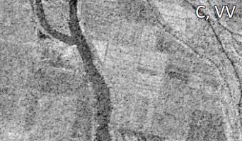

Радиолокационные данные в географических исследованиях и картографировании |
|||||||||||||||||||||||||||||||||||||||||||||||||||||||||||||||||||
|
Рассматриваемые вопросы:
Форма записи радиолокационного сигнала
Различия в амплитуде позволяют распознавать объекты или их состояние на радиолокационных снимках. Фазовая составляющая радиосигнала является основой при определении расстояния от радиолокатора до участка местности и последующего определения высот и смещений поверхности. В зависимости от задач, стоящих перед пользователем, у поставщика данных могут быть заказаны снимки разного уровня начальной обработки: для визуального дешифрирования чаще достаточно только амплитудной информации. Для создания цифровых моделей рельефа и карт смещений радиолокационные данные должны обязательно включать и амплитудную, и фазовую информацию. Зависимость радиолокационного изображения от длины волны и поляризации сигнала При зондировании в коротковолновых диапазонах (X, C) возможно получение наиболее высокого (метр и менее) пространственного разрешения радиолокационных снимков. При использовании длинноволновых диапазонов (S, L) контраст в изображении местности на радиолокационных снимках выше, чем при коротковолновых (X, C).Как правило, яркость снимков и величина УЭПР в согласованных поляризациях (VV и HH) выше, чем в перекрёстных (VH и HV). Особенно ярко эта разница проявляется на изображениях относительно ровных поверхностей (например, рябь на воде).  
 
Радиолокационные снимки участка дельты Волги, полученные съёмочной системой SIR-C/X-SAR при разных комбинациях длин волн и поляризаций Изображение антропогенных и природных объектов на радиолокационных снимках Изображение различных объектов на радиолокационных снимках зависит как от свойств самих объектов, так и от параметров съёмки.Населённые пункты характеризуются наибольшей яркостью на всех радиолокационных снимках. Сочетание горизонтальных и вертикальных поверхностей создаёт угловое отражение, направленное в сторону радиолокатора, благодаря чему от зданий приходит мощный обратный сигнал. Усилению сигнала способствуют металлические объекты (опоры ЛЭП, столбы и др.). Изображение городской застройки (г. Астрахань) на радиолокационном снимке Radarsat-2 (слева) и снимке в видимом диапазоне Железные дороги дают сильный обратный сигнал (и из-за этого высокую яркость на снимке) за счёт металлических рельсов, а автомобильные дороги и другие объекты с ровным асфальтовым или бетонным покрытием – малую мощность обратного сигнала и вследствие этого низкую яркость на снимке.
Сельскохозяйственные угодья изображаются на радиолокационных снимках по-разному в зависимости от их текущего состояния. Открытая сухая почва имеет низкую яркость, её повышение может быть вызвано распашкой или увеличением влагосодержания почвы. Самыми светлыми отображаются поля, занятые вегетирующей растительностью. Как правило, мощность обратного сигнала возрастает при увеличении влагосодержания растений и их фитомассы. Изображение сельскохозяйственных угодий на радиолокационном снимке Sentinel-1 от 28.06.2017 г. (цветовой синтез: R - поляризация VV, G - VH, B - VV/VH) (слева) и снимке Landsat-8 от 25.06.2017 г. (цветовой синтез ближнего инфракрасного, красного и зелёного каналов) Высокая и густая естественная растительность даёт достаточно мощный обратный сигнал и благодаря этому имеет повышенную яркость на изображении по сравнению с фоном: открытой почвой и низкорослой травянистой растительностью.
Объекты гидрографии при отсутствии волнения или ряби дают наименьший обратный сигнал и, как следствие, низкую яркость на радиолокационном снимке. Волнение на водной поверхности может вызвать значительное повышение обратного сигнала и в результате яркости на снимке, полученном при поляризации VV и HH. На снимке в кросс-поляризации это повышение, как правило, не наблюдается. Изображение объектов гидрографии: а - на радиолокационном снимке Radarsat-2 в поляризации HH, б - HV, в - VV, г - на снимке в видимом диапазоне Яркостные и геометрические искажения на радиолокационных изображениях Отличительная особенность радиолокационных изображений - зернистость, вызванная хаотичным чередованием светлых и тёмных пикселов и получившая название "спекл-шум". Образование спекл-шума связано с тем, что когерентные волны, испускаемые радиолокатором, после отражения от земной поверхности интерферируют, что приводит к усилению или ослаблению амплитуды принятого сигнала. Наличие спекл-шума затрудняет процесс дешифрирования радиолокационных изображений.
Другое свойство снимков – неравномерность распределения яркости, обусловленная наклоном (отклонением от надира) зондирующего луча. Изображение в ближней зоне (ближе к надиру) в общем случае имеет более высокую яркость, чем в дальней зоне. 
Радиолокационный снимок Radarsat-1 с ярко выраженной неравномерностью яркости в ближней и дальней зоне Радиолокационным изображениям свойственны проявляющиеся одновременно геометрические и яркостные искажения, обусловленные рельефом местности и параметрами съёмки (направление и углы визирования). На снимках могут присутствовать искажения трех видов: сжатие/растяжение склонов (foreshortening), переналожение вершины и основания склона (layover) и радиолокационная тень (radar shadow). Сжатие/растяжение изображения склонов формируется следующим образом (см. схему): склон AB, наклонённый в сторону радиолокатора, на изображении выглядит короче и ярче по сравнению со склоном BC, наклонённым в сторону от него.
Переналожение вершины и подножия на изображении образуется из-за того, что радиосигнал достигает вершины склона B раньше, чем его подножия A, в связи с чем на изображении наблюдается эффект “опрокидывания” гор в направлении радиолокатора.
Эффект переналожения очень хорошо заметен не только на участках с выраженным рельефом, но и в населённых пунктах с многоэтажной застройкой и другими вытянутыми в вертикальном направлении конструкциями (телебашни, опоры мостов, линий электропередач и др.)
Радиолокационная тень возникает так: участок BD недоступен для распространения радиосигнала из-за высокой крутизны склона. На снимке участки B1D1 и E1G1 изобразятся чёрным. Отметим, что размер радиотени увеличивается при увеличении углов съёмки. В отличие от теней на снимках в оптическом диапазоне, которые могут быть полупрозрачными, радиотени полностью скрывают информацию об объектах, расположенных в затенённых областях.
|
||||||||||||||||||||||||||||||||||||||||||||||||||||||||||||||||||
| © 2017 г. Балдина Е.А., Трошко К.А., лаборатория аэрокосмических методов, Географический факультет МГУ имени М.В. Ломоносова | |||||||||||||||||||||||||||||||||||||||||||||||||||||||||||||||||||